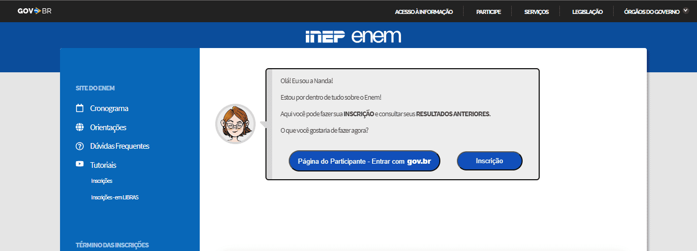

Proteja-se Contra Golpes de Sites Falsos do Enem!
O Exame Nacional do Ensino Médio (Enem) é uma etapa crucial para milhões de estudantes brasileiros que buscam ingressar na universidade. Mas, infelizmente, essa época também se torna uma oportunidade para golpistas que criam sites falsos para enganar candidatos desavisados.
O Instituto Nacional de Estudos e Pesquisas Educacionais Anísio Teixeira (Inep), responsável pela organização do Enem, alertou sobre a fraude e orientou os candidatos a realizarem a inscrição apenas pelo site oficial.
Vale destacar que a plataforma oficial do Enem, na qual a inscrição deve ser feita é:
Como se proteger de golpes na inscrição do Enem?
Fique atento para não cair em golpes durante a inscrição do Enem 2025! Veja algumas 4 dicas para se proteger:
1. Acesse o site oficial do Enem
A inscrição para o Enem 2024 deve ser feita exclusivamente pelo site oficial do Inep: https://enem.inep.gov.br/participante/.
Também é importante ficar atento à URL. Certifique-se de que a URL do site seja realmente do Inep. Sites falsos podem ter URLs muito semelhantes à original, mas com pequenas diferenças, como adição de letras ou hifens.
2. Confira o boleto da taxa de inscrição
A página oficial do Enem gera um boleto do Banco do Brasil. O candidato, por sua vez, só consegue acessar o documento fazendo login no sistema do exame, por meio da conta Gov.br.
Além disso, o pagamento da taxa de inscrição pode ser feito com cartão de crédito e débito e não apenas por boleto e PIX.

3. Verifique a autenticidade da página
Sites oficiais do governo geralmente possuem selos de autenticidade e certificados de segurança. Caso não reconheça o site ou não tenha certeza de sua confiabilidade, não forneça seus dados bancários ou informações pessoais.

4. Desconfie de preços muito baixos
Ofertas e descontos atrativos que não são divulgados pelo Inep podem ser um sinal de golpe. Sempre verifique a legitimidade das promoções.
5. Em caso de dúvidas, entre em contato com o Inep
Se você tiver qualquer dúvida sobre a inscrição ou sobre a autenticidade de um site, entre em contato com o Inep através da Central de Atendimento: https://www.gov.br/inep/pt-br. Além disso, você também pode falar com a instituição por meio do telefone 0800-616161.